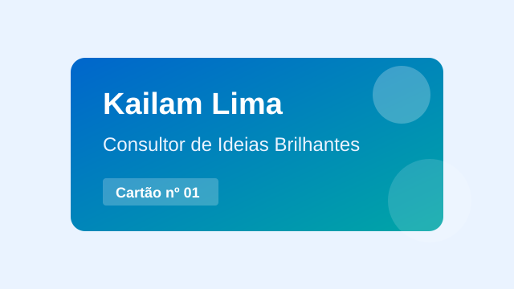

Sobre o projeto
Este site é um exercício simples de HTML, CSS e JavaScript para gerar um cartão de visitas digital com nome, cargo exótico e visual personalizado.
A proposta é transformar uma ideia direta em uma página organizada, usando estrutura semântica, layout tableless e uma interação feita com JavaScript puro.

Gerar cartão
Clique no botão, informe um nome e veja o cartão aparecer com um cargo diferente.
Nenhum cartão foi gerado ainda.
O cartão digital aparecerá aqui.